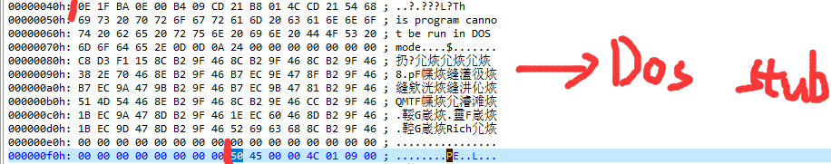

作者: tangKID
1.PE结构介绍：
PE结构是Windows平台上可执行文件所必须遵循的格式，通俗的说就是后缀为.exe的文件，后期大家在Windows下碰到的各种加壳和脱壳工具的使用和编写过程都离不开PE结构。
1.1PE节区(Section):
.text
这个节区存放着程序的代码段的内容。
.data
这个节区存放着程序的数据段的内容。.idata存放着从终端输入到程序的内容。
.rsrc
这个节区通常存放着一些模块的资源信息，这个模块通常使用较少.
当然在NT中定义了有九种预设定的section的内容，这里介绍的只是比较常见和常用的区段。
1.2PE的历史残留问题:
接触DOS的人看到这里应该就不会觉得陌生了，这里介绍的就是DOS头和DOS存根.
PE文件的第一个字节起始于MS-DOS头部，被称作IMAGE_DOS_HEADER(这个结构的具体内容大家上网查询就可以).
1.3PE头(又名NT头):
PE头表示为结构体IMAGE_NT_HEADERS
其中IMAGE_NT_HEADERS中包含着另外两个结构体:
1.IMAGE_FILE_HEADER 包含一些底层的硬件信息，不是特别常用。
2.IMAGE_OPTIONAL_HEADER32 这个结构体是PE中最大的结构体，也是包含了RE中我们比较重要的信息。
其中比较重要的几项:
1、入口点 Entry Point
2、文件偏移地址 File Offset
3、虚拟地址 Virtual Address 简称:VA
4、基地址 ImageBase
5、相对虚拟地址 Relative Virual Address 简称:RVA
RVA (相对虚拟地址) =VA (虚拟地址) － ImageBase (基地址)
左边是存放在磁盘中，右边是加载到内存中
1.4PE结构在实践中的情况:
对一个可执行文件进行PE结构的查看
1.4.1简单的Hello Word
图1.4.1 程序源码
图1.4.2二进制打开
1.4.2二进制分析:
(1)看到最开始的”4D 5A”，ASCII码翻译过来就是”MZ”,也就是前面提到的DOS头,从0000000h~00000040h都是DOS头。
(2)DOS存根就是从00000040h开始直到”PE”之前都是DOS存根。

(3)从”50 45”(“PE”)开始就是PE头
(4)从PE头之后往下就是各个节区头，每个节区的起始都是”2E”
(5)各个节区头之后就是各个节区的二进制表示。
1.5 PE工具的介绍和使用:
1.5.1工具PEiD:
1.5.2装载我们前面的Hello World程序:
请注意，PEiD能够分析的C++程序一般在VS2013之后都会显示C++8.0。
1.5.3节查看器
二进制表示中的入口点

Powered by HyperComments